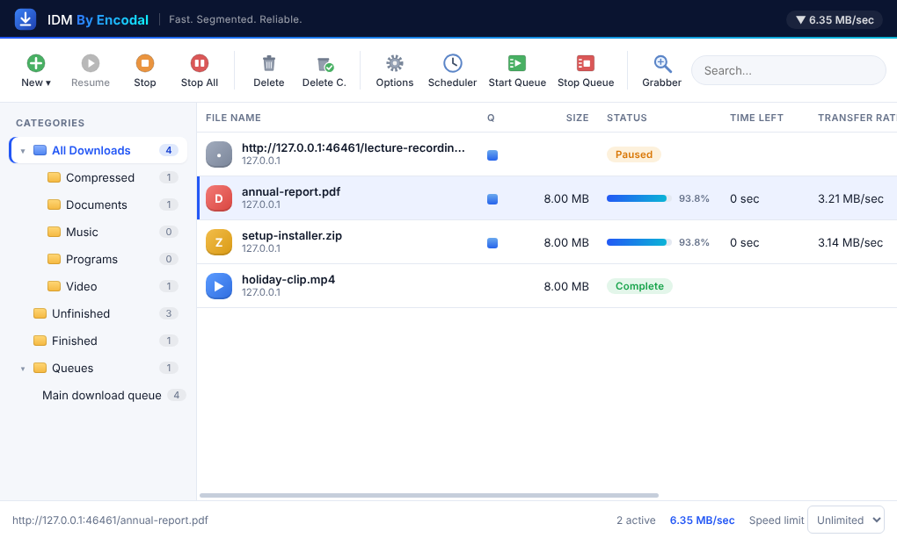
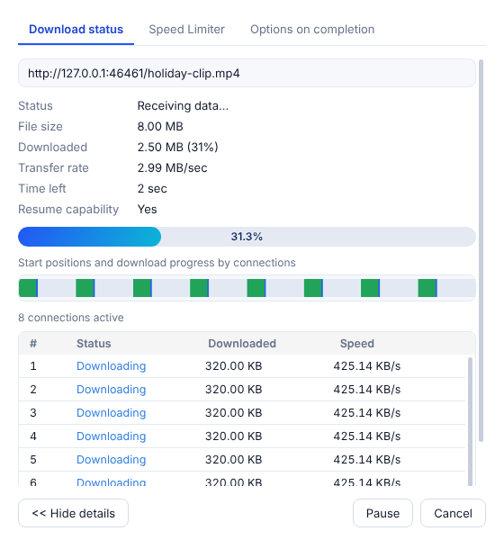
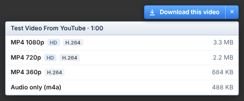
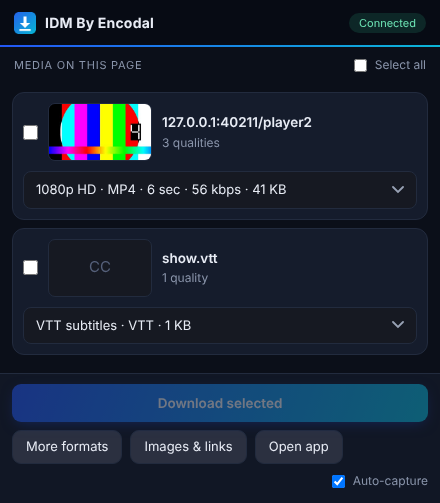

Each file is split across up to 32 connections. Hover any video and the extension lists that video's own qualities, with real file sizes, ready to download.
Download only content you own or have permission to save. DRM-protected streams are not supported.

Everything runs on your computer. The app and the extension talk over localhost only.
Ranged requests, dynamic splitting of the largest remaining piece, resume, speed limiter and queues with a scheduler.
Point at a video, even a thumbnail on YouTube, and that video's own list opens, looked up in advance so it appears at once.
Sizes come from the server itself, not an estimate, so the size you pick is the size you get.
Separate video and audio streams download in parallel and are joined while they arrive, so the finished file appears without a long wait.
List every image, link and file on a page or a whole site, filter by size or type, and download the selection.
Playlist streams, manifests, FTP and FTPS with resume, cookies, custom headers and logins.
One continuous bar shows what has arrived, with a marker on each live connection. The table below lists every connection with its status and speed.

A button sits over the video. Click it, or just rest the pointer, and the qualities open: resolution, codec, container and size.

The toolbar popup groups every video on the page into one card with a quality drop-down. Tick what you want and press Download selected.

The list shows each quality with its codec and container, so you pick the exact file you want.
Plays everywhere. Best for phones, TVs and editors.
High resolutions, often smaller than H.264 at 1440p and 4K.
Most efficient codec for modern devices.
Audio-only, several bitrates to choose from.
Stream playlists, joined into one file.
Archives, installers, documents, images, FTP files and anything with a direct address.
npm install npm run dist
The installer appears in the dist folder.
chrome://extensions Developer mode → Load unpacked → select the extension folder
Edge uses edge://extensions. Firefox uses about:debugging.
Open the app once, then hover any video.
Click the button over the video, or use the toolbar icon.
| Browser | Extension | Notes |
|---|---|---|
| Google Chrome | Supported | Manifest V3. |
| Microsoft Edge | Supported | Same package as Chrome. |
| Firefox | Supported | Version 128 or newer. |
| Other Chromium browsers | Untested | Brave, Opera and Vivaldi load the Chrome package. |
Replace the links with your own release files when you publish.
The server must allow Range requests. Some sites do not, and some streams arrive as a single file.
Public video that a site serves to your browser can be saved where the site's terms allow it. DRM-protected video is not supported.
No. It is an original program with a similar workflow and does not use IDM code.
No account and no tracking. The extension sends page addresses to the app on localhost, and the app downloads directly from the source.